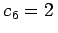
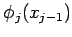
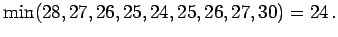
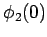

.
.
| c1=4, |
c2=3, |
c3=5, |
c4=3, |
c5=4, |
, |
| v1=6, |
v2=7, |
v3=4, |
v4=2, |
v5=4, |
. |
- 1. Rückwärtsrechnung:
- Die Funktionswerte  werden an den Stützstellen
bestimmt. Es genügt dann, die Minimumsuche nur für ganzzahlige Entscheidungen uj durchzuführen.
Gemäß Variante 2 der BELLMANschen Funktionalgleichungsmethode werden nur die Werte in die letzte Zeile der Tabelle eingetragen. Exemplarisch wird bestimmt.
 |
= |
|
|
| |
= |
 |
|
- 2. Vorwärtsrechnung:
Als Minimalstelle ergibt sich u1*=4 und somit . Dieses Verfahren wird für  und alle nachfolgenden Stufen wiederholt. Die optimale Politik lautet